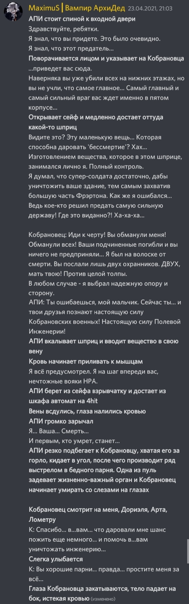
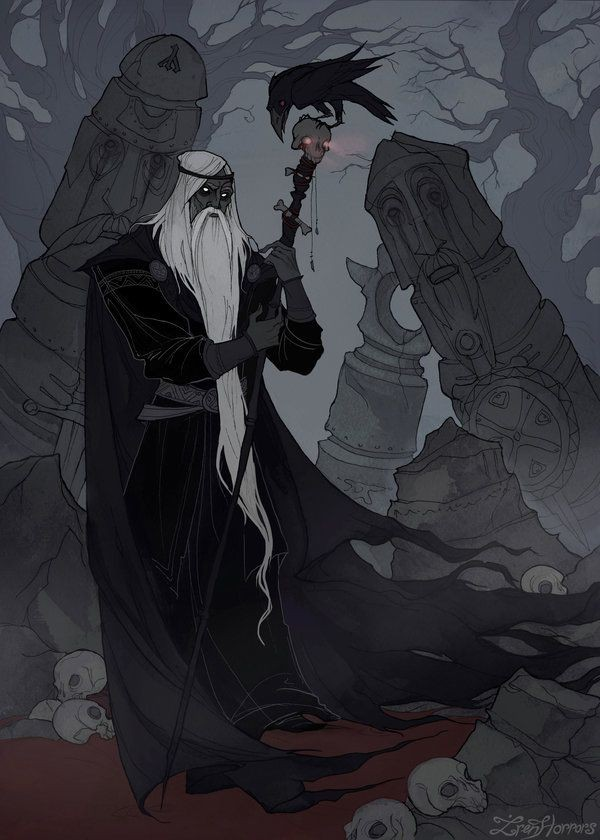
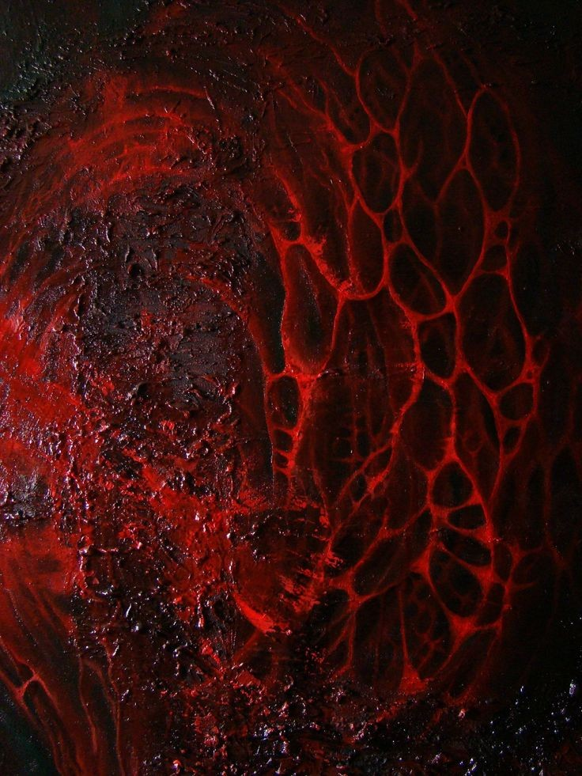
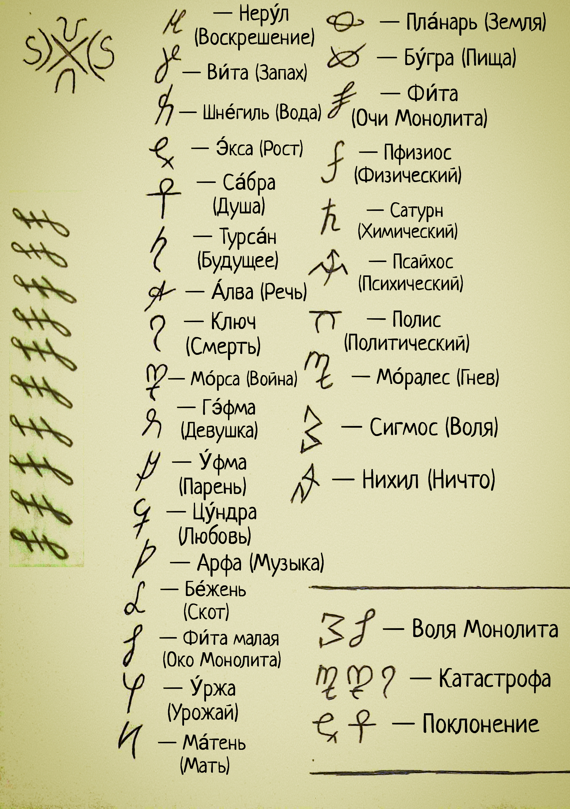
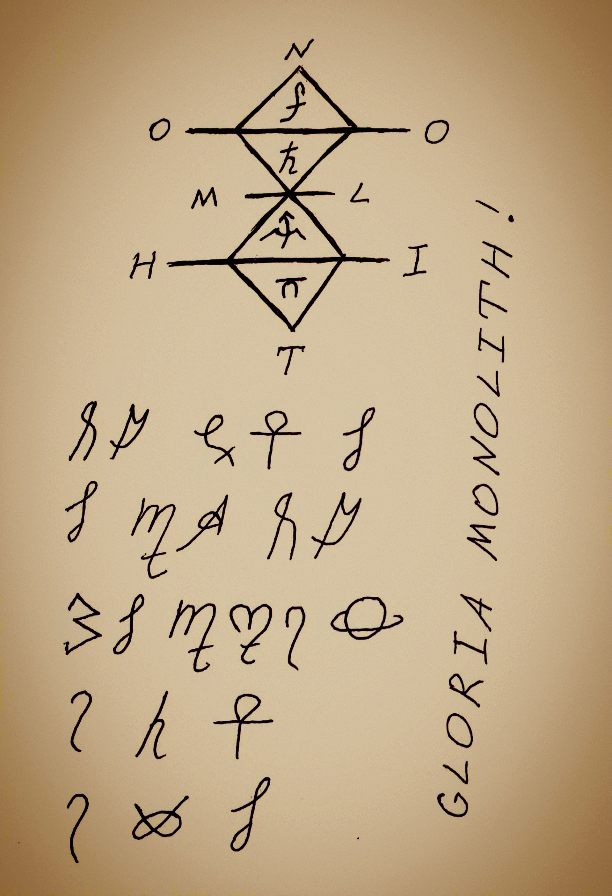
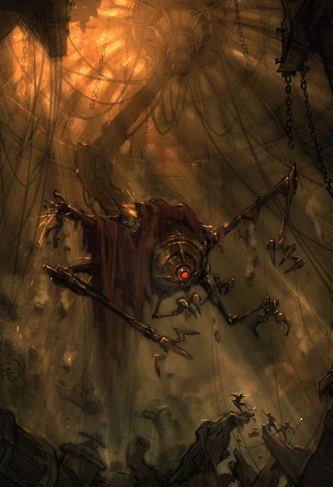
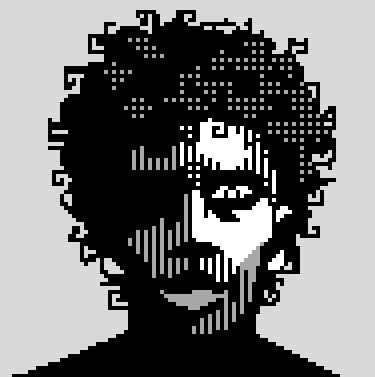
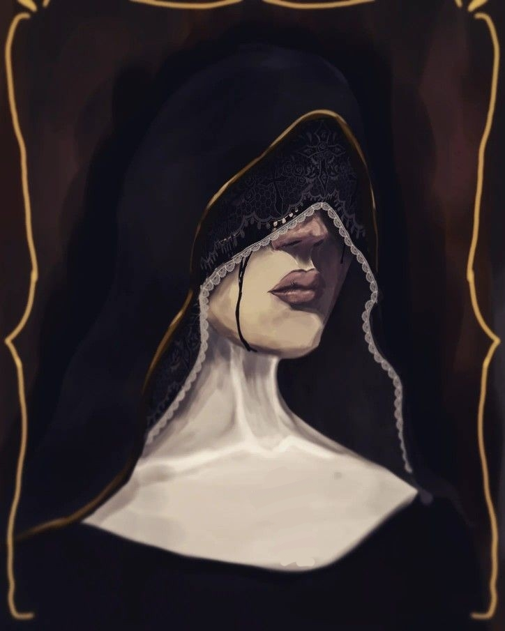

• “Слава Дурке!” — Традиционное, патриотичное приветствие/прощание между сотрудниками психбольницы.
• Первое упоминание: 06.05.2020 год.
Также, начиная с 13.08.2022, введены новые варианты приветствия, сопровождающиеся поднятием руки вверх, на манер
нацистского приветствия: «Хайль Дурка!», «Хайль Максимус!».
• тПИП - таблетки Против Импульсивного Поведения; Лекарство, которое принимал (принимает) Управляющий, для поддержания здравого рассудка.
• Первое упоминание: 05.06.2021 год.
• СРД - Склад Разработок Дурки; Название говорит само за себя. Данный склад используется для безопасного хранения всех разработок, созданных Дурковскими учёными.
Интересный факт: Мало кто знает, но изначально СРД имел немного другое название: Склад СФР (Секретных Фашистских Разработок).
• Первое упоминание: 31.01.2021 год.
• Секретный подвал - Второй по счету подвал в Дурке. Используется (по большей мере) для пыток нарушителей порядка.
• Первое упоминание: 09.06.2021 год.
• ВВТ - Великая Всемирная Трагедия; Трагедия связанная с психотронным оружием, которая привела к появлению "Нового Мира". (Подробнее см. в ЛОРе).
• Первое упоминание: 16.03.2022 год

• ОДК - Общий Дурковский Кодекс; Свод уставов, которые содержат различные ограничения, запреты и правила, для поддержания порядка в Дурке.
• Первое упоминание: 01.04.2022 год
• Тимеоло́гия - Раздел психологии, возникший в Дурке, который специализируется на изучении страхов и фобий людей.
• Первое упоминание: 07.04.2022 год
• “Он”; “Ему”; “Его” (всегда с большой буквы) — В некоторых контекстах означает аллюзивное сокрытие слова «Управляющий».
• Примеры употребления:
«Он всё видит, Он всё слышит» => т.е. «Управляющий всё видит и всё слышит».
«Твоя жизнь в Его руках» => т.е. «Твоя жизнь в руках Управляющего»
• “Она”; “Ей”; “Её” (всегда с большой буквы) — В некоторых контекстах означает аллюзивное сокрытие слова «Дурка».
• Пример употребления:
«Слава Ей!» => т.е. «Слава Дурке!»
• Далёкие Земли — Территория г. Фрэртон, отделенная от центра. Находится, можно сказать, на окраине. Имеет свою инфраструктуру, кооператив заводов, ГЭС, ТЭС и пр.
• «Самогон в шприце» — Крылатое выражение и локальный мем. «Самогон» является раствором, изготовленным Администратором Полевой Инженерии (АПИ) — Кобрановским служащим и врагом Дурки.
Ниже представлен фрагмент кат-сцены битвы с АПИ и первым упоминанием чудо-раствора из шприца.

• Чернобог — Злой Бог, приносящий несчастья и болезни. В него верят Культисты-Чернобоговцы, которые являются подобием наёмников, т.е. готовы сотрудничать с кем-либо за определённую плату.
Изображение Чернобога представлено ниже.

• Физическая характеристика: «ед. з» (или «хп») — единицы здоровья.
• Ментальная характеристика: «ед. р» (или «сп») — единицы рассудка.
• Духовная характеристика: «ед. д» — единицы души (Условная характеристика. У каждого персонажа по-умолчанию 1 единица души. Однако, паранормальные дефектиды могут иметь с себе больше душ)
• «Виргам» доминация; «Аэгрос» доминация; «Аргументис» доминация — 3 статистических термина, обозначающих соотношения персонала, пациентов и аномалий в Дурке.
«Виргам» («Персонал») — означает, что количество персонала превосходит кол-во пациентов и аномалий.
«Аэгрос» («Пациенты») — означает, что количество пациентов превосходит кол-во персонала и аномалий.
«Аргументис» («Аномалии») — означает, что количество аномалий превосходит кол-во персонала и пациентов.
• Система Защиты Техники (СЗТ) — система шифрования для обеспечения защищенности данных, и с целью не допустить проникновения недоброжелателя в ядра техники.
Выделяют 3 СЗТ:
— Однофакторное шифрование («1Ф СЗТ» или «1F EPS»);
— Двухфакторное шифрование (2Ф СЗТ или «2F EPS»);
— Трёхфакторное шифрование (3Ф СЗТ или «3F EPS»).
• Деструктивные Эмоции — сущность внутри личности, предоставляющая возможность человеку проявлять разные бурные эмоции. Помогает в делах, которые требуют креативности.
• Здравый Ум — сущность внутри личности, помогающая человеку принимать решения, опираясь лишь на сухую логику и стратегическое мышление. Помогает в делах, требующих хладнокровности.
Особенность: Чем ниже рассудок человека, тем больше преобладают Деструктивные Эмоции.
• «И́нмурис» («In muris» с латинского «В стенах») — загадочная энергия (сила), которая, по слухам, течёт внутри здания Дурки. Говорят, что инмурис карает предателей и наделяет силой персонал и Управляющего.
• Первое упоминание: 08.10.2022 год.
• «Хворь»/«Проказа»/«Рубрум Пульвис» — инфекция, впервые замеченная утром 20-го июля в Клэдонской области НРА. Министерство просвещения обвинило интервентов из Кобрана в занесении инфекции в страну, однако точной причины возникновения Хвори пока не установлено. Ведется разбирательство.
Инфекция распространяется чрезвычайно быстро, путем тесного соприкосновения с кровью и плотью больного, а также путем вдыхания.
Симптомы заражения: повышение давления, головная боль, тошнота, рвота с кровью, воспаление сосудов, головокружение, диарея с кровью, повышение температуры, появление по всему телу водянистых кроваво-гнойных пузырьков.
Летальность очень высока. Из-за воспаления сосудов, в 90% случаев происходит внутреннее кровоизлияние в мозг. Человек буквально «разрывается изнутри».

• «Ortus Solis» («Восход») — сакральный рунический язык, придуманный Святыми Отцами Хаоса во Фрэртоне. Всего в Восходе 27 рун, каждая из которых обозначает определённое понятие. Совмещая руны между собой — можно получить более обширные понятия или даже составлять предложения.
Кроме того, Хаос веруют, что набивая татуировки с такими рунами или изготавливая и нося нашивки с ними — можно получить истинную силу и мудрость Монолита.

Рунический молитвенный текст во славу Монолита:

• Монолитовый аккумулятор — источник энергии, разработанный Трансгуманистами во Фрэртоне. В основе аккумулятора лежит монолитова пыль, добытая в руинах Дремлющего Храма, где раньше располагался Монолит.
Способ выдавать невероятное количество энергии. Обычно крепится за спиной, вместе с остальной аппаратурой. Если вывести из строя аккумулятор — протезы, подключенные к нему, перестанут функционировать.
Сломать аккумулятор можно следующими способами:
- Через «тихое убийство».
- Во время боя, используя ловкость, зайти противнику за спину и нанести удар по аккумулятору.
- Нанеся критический урон.
К аккумулятору крепятся как протезы-вооружения, так и рядовые импланты, улучшающие способности человека. Например:
— Имплант глаза со встроенным датчиком движения и инфракрасным излучением, позволяющим видеть в темноте.
— Имплант ног, позволяющий передвигаться быстрее.
— Имплант рук, позволяющий переносить больше тяжести и в целом увеличивает силу.
И т.д.
• «Бог Машин»/«Механическое Божество»/«МехБог»/«Бог Механизмов» — невероятных масштабов конструкция машины, которую разрабатывают трансгуманисты во Фрэртоне. Бог Машин должен быть истинным воплощением технократии и трансгуманизма, став новой веткой эволюции человечества, помогая ему достичь совершенства. По крайней мере так считают сами трансгуманисты…

• Древние Абсурды — гипотетическая раса, которая, по мнению экспертов, существовала на территории нынешнего Абсурдистана. Древние Абсурды провозгласили себя после ВВТ. Их местом обитания стала, так называемая, Абсурдия или Великая Абсурдия, которая в последствии приняла знакомый нам вид Абсурдистана.
Древние Абсурды состояли из выживших коренных жителей той местности, где они и находились (т.е. Абсурдии АКА Абсурдистана).
Бытует мнение, что некоторые из представителей древних Абсурдов до сих пор живы, но их местоположение установить, к сожалению, пока не удалось.
• Истинное знание сети — гипотетическое знание, которое, по мнению Хранителей Протокола, находится где-то в глубинах Интернета.
Истинное знание сети можно сравнить с философским камнем, за которым алхимики так гнались.
Хранители верят, что отыскав 12 ключей Интернета и открыв истинное знание — они получат доступ ко всей человеческой истории, получат ответы на все вопросы, смогут постичь все загадки человечества и наконец — обретут цифровое бессмертие, воссоединившись с Интернетом, став цифровыми ангелами в руках Аспектуса.
• С. Санктус — псевдоним предводителя Хранителей Протокола. Согласно легенде, Санктус одним из первых был удостоен узреть откровение Аспектуса и одним из первых получил Протокол.
Санктус ведёт активную, но анонимную жизнь в Интернете, помогая своим последователям и делясь полученными знаниями с другими.
Местоположение, возраст, настоящее имя и фамилия и др. — ничего из этого, пока что, неизвестно о С. Санктусе.
Единственный идентификатор его личности — аватар, который используется им в интернете (см. ниже).

• «Лилима» — слово, обозначающее распутную девушку, путану или проститутку. Т.е. лилима — девушка, оказывающая сексуальные услуги за деньги. Более мягкое слово заместо «шлюха».
Раньше использовалось повсеместно на территории Убрэйна. Там изначально лилимами называли танцовщиц и других девушек, которые развлекали публику. Далее термин стал распространяться в другие страны, где уже приобрел более вульгарное значение, которое стало общепринятым во многих государствах.
«Лилим» — аналогичное по смыслу слово, но применяющееся к распутным мужчинам или же «бабникам» в простонародье.
• Энергия «Доло́рис» — энергия страдания, которая по слухам выделяется людьми, когда те испытывают стресс, муки и страдания. Конспирологи со всего мира утверждают, что долорисом питаются так называемые мировые элиты, коих именуют «Электами». Электы — теневое мировое правительство, которое пытается поджать под себя все страны и истребить всех неугодных. Однако, это всего лишь конспирологические теории фанатиков.
• «Милана Вилл. Уста Великой Воли» — девушка, являющаяся предводительницей Церкви Покаяния. Имеет самый высокий статус в иерархии — инквизитор.
Будучи слепой, Милана утверждает, что имеет постоянную ментальную связь с Великой Волей и способна видеть её. По мнению девушки, слепота — это не проклятие, а дар.
Однако, что интересно, Милана постоянно плачет слезами чёрного цвета. Это напрямую указывает на аномальное происхождение девушки. Тем не менее, Милана убедила всех в том, что эти слёзы принадлежат не ей, а миллионам грешников, которые не смогли покаяться перед Великой Волей и были вынуждены страдать изо дня в день, выделяя энергию Долорис. Девушка также говорит, что когда все грешники будут уничтожены или примкнут к Великой Воле — слёзы перестанут течь.

• Конспирологическая теория существования «ПСЧН» (Подразделение Сокращения Численности Населения) или «ССЧН» (Служба Сокращения Численности Населения) — согласно этой теории, в министерствах внутренних дел многих (или отдельно взятых) стран существует специальное подразделение, которое занимается всевозможным сокращением численности населения (в некоторых теориях, ПСЧН/ССЧН применяют психотронное оружие), т.е. совершают преднамеренные массовые убийства, заказчиками которых являются — элита государственного аппарата, правительство, какие-либо тайные службы и тд.
• ОМИ (Оружие Медицинского Истребления) — гипотетическое оружие, которое используют конспирологи в качестве примера «ужасающих условий» в больницах и психиатрических лечебницах, а также в качестве аргумента на тему того, что больницы не выполняют свои функции, а только калечат и убивают людей.
По мнению конспирологов, ОМИ включает в себя различные препараты и оборудование, которое под видом лечения — умерщвляет человека. К такому оружию относят различные лекарственные препараты, различные излучатели и пр.
Среди приверженцев теории о существовании ОМИ также можно встретить идеи о том, что часть такого оборудования создано на основе психотронного оружия или является его прямым аналогом.
• МСНМ (Международный Суд Нового Мира) — суд международного толка, специализирующийся на различных уголовных и военных преступлениях мирового масштаба. Единственный общемировой суд, который в праве выдавать ордера на арест членов правительства и других высокопоставленных лиц.
• Кобрановский частотный транслятор (КЧТ) или Частотный транслятор Либэ (ЧТЛ) — устройство, зачастую автономно, вещающее определенный, заранее зоготовленный текст. Хотя есть вариант и ручной трансляции.
Трансляторы стали активнее использовать на территории оккупированного Фрэртона для передачи некоторых сведений, а также кодов от хранилищ, пароль к которым можно подобрать лишь зная частоту вещания кода того или иного хранилища. Такое решение обусловлено необходимостью в кратчайшие сроки обеспечить безопасность некоторых ресурсов.
• Кобрановский частотный приёмник (КЧП) или Частотный приёмник Либэ (ЧПЛ) — как правило, портативные устройства для оперативного приёма информации, которую вещают КЧТ на своих частотах. Однако, есть возможность использовать КЧП в качестве аналога рации.
КЧП используются в особых случаях, поскольку передавая через КЧТ—>КПЧ информация тщательнее шифруется радистами, в отличие от обычных раций. Кроме того, такой подход позволяет реализовать почти беспрерывное вещание заранее заготовленной информации на определённой частоте.
Выделяют несколько видов КЧП:
- ПКП — Портативный Коротковолновый Приёмник: 1,5 — 80 frq (frq — частота, местная единица измерения);
- ППУВ-1 — Портативный Приёмник Ультракоротких Волн: 80,001 — 600 frq;
- ППУВ-2 — Портативный Приёмник Ультракоротких Волн: 600,001 — 800+ frq.
- УЧП «Смерч» (Универсальный Частотный Приёмник) — дорогой, но очень полезный приёмник, способный работать как в коротковолновом режиме, так и в диапазонах ультракоротких волн (режим переключается). Обычно доступен лишь высшему Командованию.
• Культурно- и историко-краеведческая община Фрэртона (КИКОФ) — объединение независимых лиц и групп лиц с целью всестороннего изучения города Фрэртон (Независимая Республика Абсурдистан), его культуры, истории и развития.